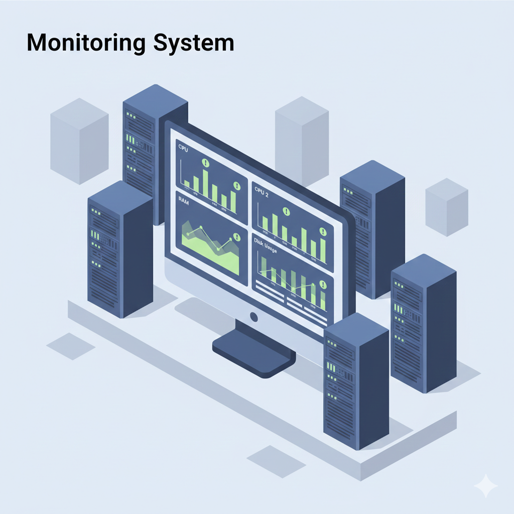
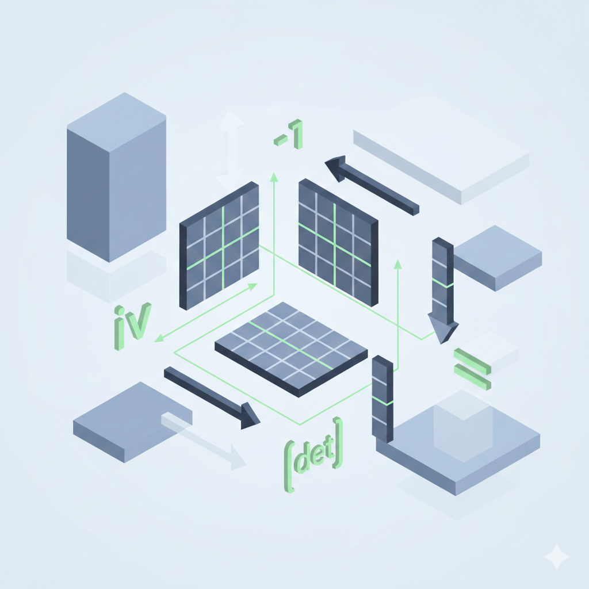
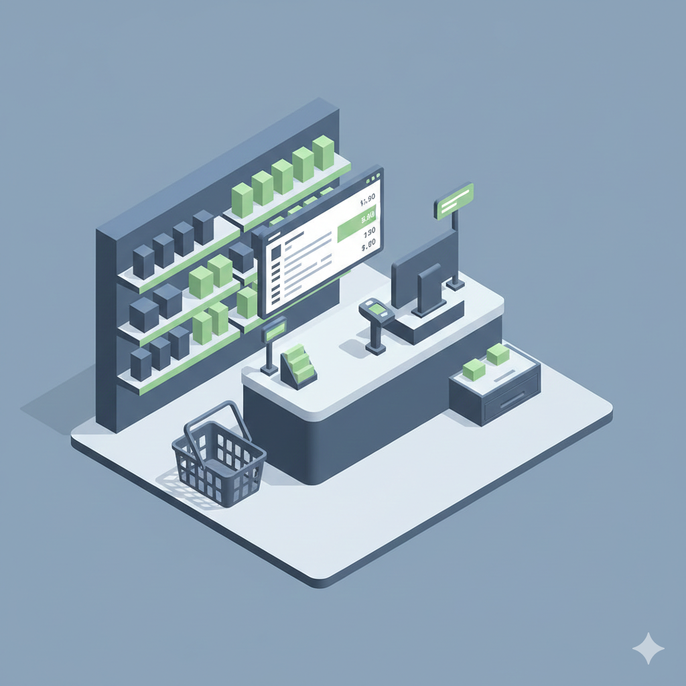
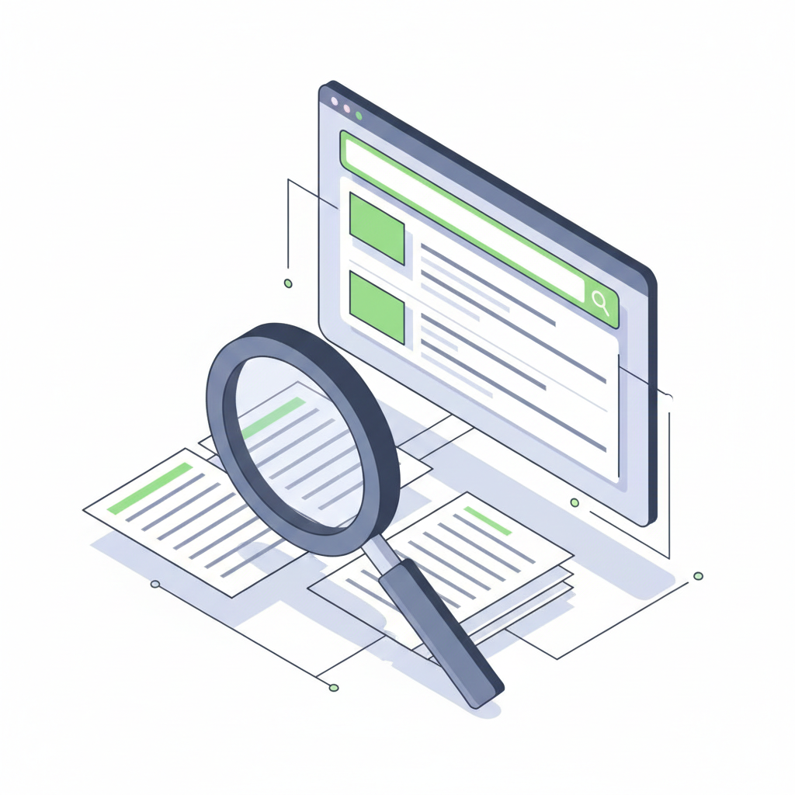
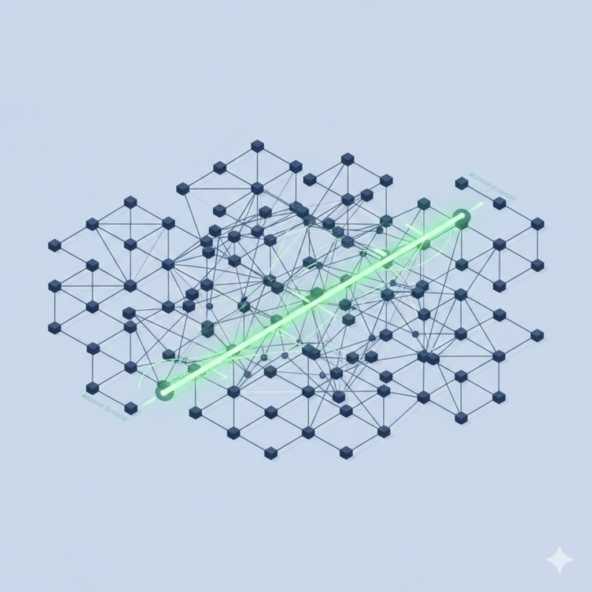

Obtenir une alternance formatrice
Rejoindre une équipe où je pourrai contribuer à des projets concrets, comprendre les besoins métier et progresser avec des retours réguliers.
Je conçois des solutions logicielles fiables et performantes, avec une approche orientée qualité, structure et impact. Intéressé par l'intelligence artificielle, les systèmes et les réseaux informatiques, j'apprends rapidement et je m'adapte à de nouveaux environnements techniques. Je recherche une alternance où je pourrai m'investir pleinement pour développer des solutions concrètes et progresser dans des contextes exigeants.
Rejoindre une équipe où je pourrai contribuer à des projets concrets, comprendre les besoins métier et progresser avec des retours réguliers.
Approfondir mes connaissances en informatique, consolider mes acquis et rester adaptable face à différents environnements techniques.
Mieux comprendre le fonctionnement du monde de l'entreprise, gagner en autonomie et développer des habitudes de travail solides.
Application de covoiturage en Yii avec architecture MVC, gestion utilisateurs, trajets et base de données.

Outil de supervision Python/Linux avec collecte de métriques, alertes et interface web.
Plateforme web pour trouver des activités locales par passion, rejoindre des groupes et échanger via chat.
Simulation C d'un réseau Token Ring dynamique avec sockets, jeton, broadcast, reprise et tolérance aux pannes.

Bibliothèque Java pour les opérations avancées: déterminant, produit, inverse et manipulation de matrices.
Application collaborative pour regarder des vidéos ensemble avec synchronisation et chat en temps réel.

Application Java pour gérer les produits, les ventes, les stocks et la logique métier d'une supérette.
Application PHP pour la gestion de patients, rendez-vous et informations administratives d'un cabinet.

Moteur Java avec indexation et recherche textuelle basée sur TF-IDF et BM25.

Implémentations d'algorithmes de graphe, dont Dijkstra et Bellman-Ford.
Programme Python qui résout des labyrinthes texte avec DFS, BFS et A*, puis génère une visualisation du chemin et des cases explorées.
Agents Python entraînés par Q-learning sur Gymnasium pour résoudre FrozenLake, Taxi et CartPole avec sauvegarde des modèles et suivi des performances.
Site personnel HTML/CSS/JavaScript pour présenter mon profil, mes compétences et mes projets.
Laboratoire Informatique d'Avignon (LIA), Avignon Université
Développement Python autour du traitement de logs, du scripting et de l'automatisation pour une plateforme expérimentale d'apprentissage fédéré.
D'autres travaux sont disponibles sur mon GitHub : github.com/SyphaxMEDJBER. Je continue également à réaliser des projets de qualité tout en apprenant et en améliorant mes compétences.
Pour un échange au salon, une opportunité d'alternance ou une question sur mes projets.
Merci pour votre visite